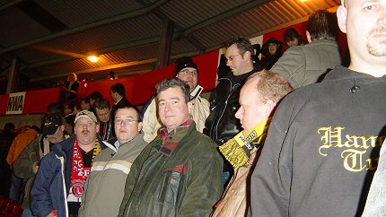
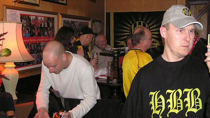

|
Charlton Athletic - Chelsea (0-4) 27 november 2004
|
Ons traditionele ontbijt aan boord van SeaFrance.
Our traditional breakfast on board from SeaFrance.
Sommigen van ons reisden per Eurostar wat riskant was vanwege een
treinstaking in België. Hierdoor moest de Schaesbergclan een taxi nemen
wat 200 euro extra kostte!!! De meesten gingen echter met het vliegtuig.
Some of us travelled by Eurostar. Risky because of a train-strike in Belgium.
The Schaesberg-posse had to take a taxi what led to an additional 200 euro
cost!!! Most supporters however travelled by airplane.
Terwijl wij nog onderweg waren hadden de Hanebretboys een rondleiding
in The Valley door Ian Cartwright.
While we still were traveling the Beer Quaffers had a Valley-tour by Ian C.
De inwijding van de Roda-Charlton vlag op Piccadilly Circus.
The inauguration of the Roda-Charlton flag at Piccadilly Circus.
In de biertuin van The Rose of Denmark wordt traditiegetrouw een foto
gemaakt met de supporters van de bezoekende club. Dat waren er deze
keer
twee: Roda en Chelsea...
As a tradition pictures or being made in the beergarden of the R.O.D. with
the visiting team. This time there were two of them: Roda and Chelsea...
Engeland gaat massaal aan de chocomel!
Chocomel is taking England by storm!
Tracy zag er totaal anders uit.
Tracy changed her looks dramatically.
Er kwam zelfs een Nieuwzeelandse TV-journalist opdagen die verleden jaar
bij Roda-ADO Den Haag een special maakte over Ivan Vicelich welke toen
diemaal scoorde. Hierna werd de in London woonachtige journalist verliefd
op Roda en greep de kans aan om met zijn sjaal naar de ROD te gaan.
There even appeared a New-Zealand TV-reporter who made an issue about
Ivan Vicelich last season at Roda-The Hague. Vicelich scored 3 times and
after that the journalist felt in love with Roda. That's why he is appearing at
the R.O.D. with his lovely scarf.

Dit is Dick, bekend van "Dick's facts and fixtures".
Tricky Dickie :-)
De wedstrijd begint om 15.00 uur. Bijna 27.000 toeschouwers zitten in
The Valley.
The match kicks off at 15.00 PM. The attendance is nearly 27.000.
Na 4 min. scoort Damien Duff al 0-1.
Allready after 4 min. D.D. scores 0-1.
Een vrolijke familie. Nummer 16 is Arjen Robben.
A happy family. Number 16 is Arjen Robben.

Tijd voor een stadion-bier.
Time out for a stadium-beer.
Terwijl we nog aan ons biertje nippen wordt het 0-2 en 0-3 door John Terry.
Whilst still sipping our beer it turns 0-2 and 0-3 by John Terry.

Als voetbalkenners zien we dat Charlton geen kans heeft. Chelsea is veel
te sterk en geeft de Addicks in deze derby voetballes.
As we are football-conaisseurs we see that there is no chance for Charlton.
Chelsea is far too strong and is actually given a footballing lesson to the
Addicks.
Jean nam de glijbaan op weg naar de plee.
Jean took the slides on his way down to the toilets.
Een halfuur voor tijd scoort Gudjohnsen 0-4....
With half an hour to go Gudjohnsen scores 0-4....
Een drievoudige wissel bij Charlton (19 = Rommedahl)
A triple substitution at Charlton's.
Ondanks het overwicht van Chelsea kreeg Charlton enkele kansen, maar ze
gingen er niet in.
In spite of Chelsea's superiority Charlton got several chances but they just
failed to score.
Rommedahl neemt een corner met een mooie Roda-bal ;-)
Corner by Rommedahl with an awefull Roda-ball ;-)
Terug in "onze" uitzonderlijk familiaire en gezellige kroeg.
Back in "our" extraordinary familiar and cosy pub.
Sommige mensen raken nooit van de fles af ;-)
Some guys stick to the bottle for ever.
Wat probeert Dave Jos duidelijk te maken???
What is Dave trying to explain to Jos???
Kate en Gerry komen in mei ook naar Roda JC.
Kate and Gerry are also coming to Roda JC in may.
Er werd heel wat afgelachen en gezongen.
There were several songs and many good laughs.

David houdt van gemaskerde honden..... bizar!
David likes masked dogs... bizarre!
Kath de waardin poseert met het Roda-Milan shirt, gesigneerd door de
voltallige selectie.
Kath the landlady posing with the Roda-Milan shirt, signed by the entire
squad. 
We zijn niet blij om te vernemen dat Roda slechts een gelijkspel heeft
behaald tegen NEC.
We are not pleased to hear that Roda has only reached a draw against
NEC-Nijmegen.
Hoe dan ook, tijd om te gaan....
Anyway, time to go....
...om lekker te slapen!
...and have a nice sleep!
De komende dagen volgen meer foto's van deze bijzondere trip.
The uncoming days more pictures to come from this special trip.
© Koempels Pleasure Dome
|